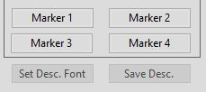

AECHO provides four Marker buttons, which are used to
bookmark locations within a loaded ODF. These bookmarks remain in
place until individually changed, until reset as a group (menu
> Tools > Clear Markers),
or until the ODF is closed: Markers are not retained once an ODF has
been closed or AECHO has terminated. These four buttons are only
enabled while an ODF is loaded. They are located at the bottom of
the Data Panel, just beneath the Section, Line, and Row data.
Markers that are not set display their original text ("Marker
1/2/3/4") as seen here. Left-clicking on an unset Marker has
no effect.

Markers are set by right-clicking once on the button,
thereby assigning it the line number where the Cursor/Caret is
presently located: this is also the same value as displayed in the
Data Panel's Line Number field at the moment of the
right-click. When set, the Marker displays the bookmarked
line number on the button's face, against a pale-blue background.
Left-clicking on a set Marker will position the
Cursor/Caret to the beginning of the bookmarked line, using single
mouse-click semantics: the Caret Position, Line Number,
Line Start, Line End, Row Start, and Row
End fields are updated, but the Section is not updated, no
text is selected, and the contents of the XML Row/Record Area and
Tags Panel remain unchanged. In the following example, on the left
picture, Marker 1 has been set to Line 58, and Marker 4
to Line 269: setting Marker 4 was the last operation
performed, and the Data Panel still shows "269" as the current Line
Number. The right-side picture shows the state after
left-clicking on Marker 1 ("58"), thereby repositioning the
Cursor/Caret: note the updates to the Caret, Line, and Row
information, while the Section data remains unchanged, even though
the new position is located in a different Section of the ODF.